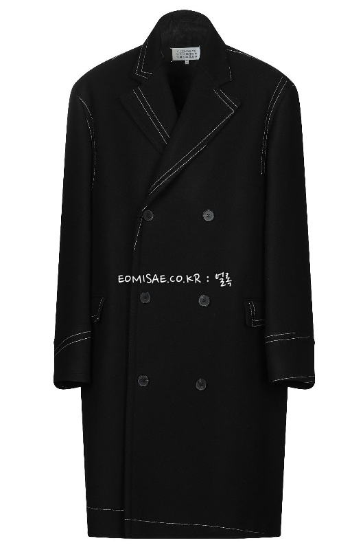

아우터
 Coat. 격식을 갖춘 외투. 옛 유럽식 정장인 프록 코트에서 유래된 의복으로,
프로이센 군대를 위시한 19세기 중순부터 20세기 말까지 유럽의 군대에서는 모직 튜닉과 롱 코트를 군복으로 사용했다.
남성 복식에서 격식을 차리고자 할때 정석으로 보통 추울 때 정장 위에 곁대입는 경우가 많다
레인코트의 일종으로 19세기에 만들어진 긴 기장의 코트이다.
니트 소재로 짠 겉옷 의류의 일종으로, 칼라 없이 앞자락을 터서 단추로 채우게 된 털로 짠 스웨터이다.